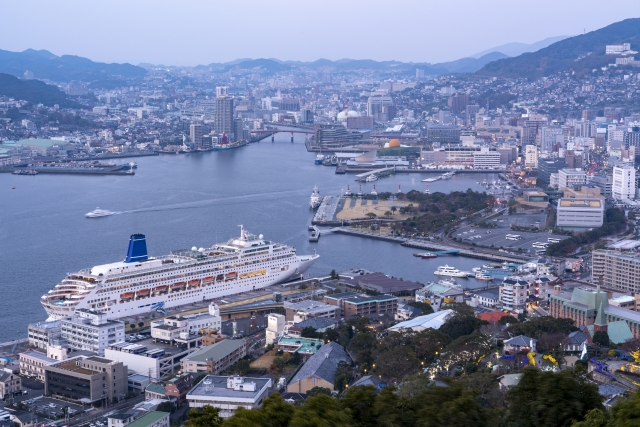
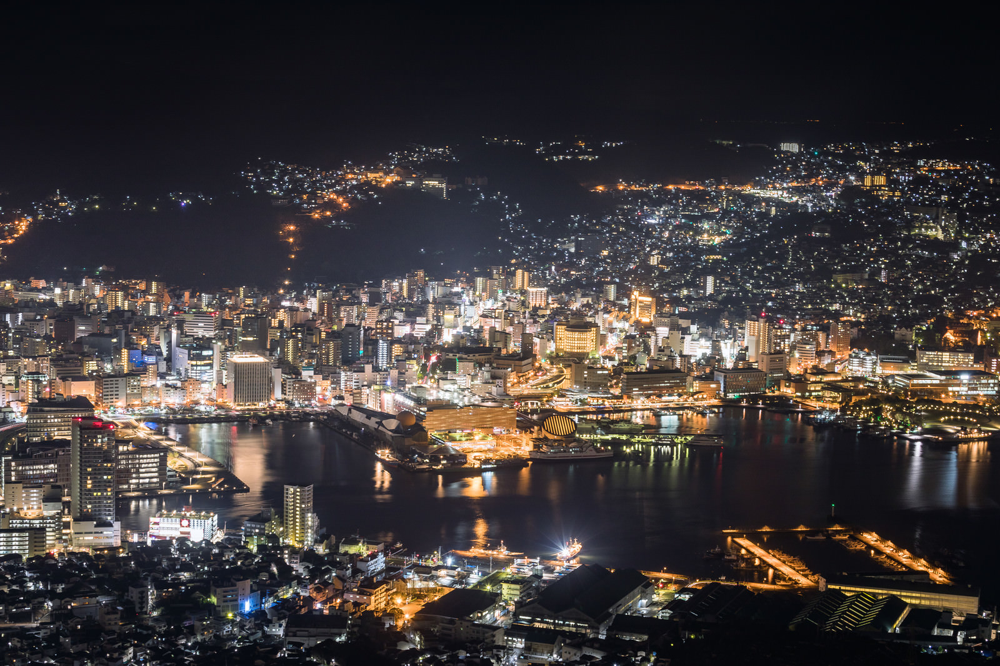

長崎市観光
時間: 11時〜21時
移動開始位置名: 松ヶ枝国際ターミナル
1つ目の場所: グラバー園

特徴: 偉人たちも魅せられた長崎港の絶景を体感！
長崎港を一望できる南山手の丘にある、明治期の洋館群を展示する観光スポットです。世界遺産の構成資産である旧グラバー住宅をはじめ、国指定重要文化財の旧リンガー住宅や旧オルト住宅など、異国情緒あふれる建築物が見どころです。園内には花や緑が豊富で、石畳や石段にも歴史や文化の香りが漂います。
滞在時間:60分
2つ目の場所: 鍋冠山公園
特徴: 稲佐山に匹敵する美しい夜景をバリアフリー展望台から楽しめる人気スポット
標高169mの山で、長崎市街と長崎港を一望できる人気の観光スポットです。2016年にリニューアルされた回廊形式の展望台からは、すり鉢状の地形を見ることができ長崎らしさが感じられます。また、稲佐山に匹敵する美しい夜景をバリアフリー展望台から楽しめます。
滞在時間:40分
3つ目の場所: 稲佐山山頂展望台
特徴: ロープウェイで登れる丘の頂上にある展望台。市街地を見渡せる。
稲佐山公園内の展望台です。標高333メートルの山頂からは、360度のパノラマが楽しめ、市内全景を望むことができます。夜景のビュースポットとしても有名で、天気の良い日には雲仙・天草・五島列島までも遠望できます。
滞在時間:40分
4つ目の場所: 平和公園（平和祈念像・平和の泉)
特徴: 原爆犠牲者の冥福と恒久平和を願う祈りの空間
心静かに過去を振り返り、未来の平和を願う空間です。
平和祈念像と平和の泉は、戦争の悲劇を思い出させ、心に深く平和の重要性を刻みます。
滞在時間:60分
5つ目の場所: 長崎原爆資料館

特徴: 「長崎を最後の被爆地に」原爆の脅威と平和の尊さを伝え、恒久平和を世界に発信
1945年に原爆により被害を受けた長崎の歴史と平和への願いを伝える施設です。被爆の惨状や核兵器開発の歴史、長崎の復興の様子などをストーリー性のある展示で紹介しています。核兵器のない世界の実現に向けて平和を発信する場として、国内外から多くの人々が訪れる場所です。
滞在時間:60分
6つ目の場所: 長崎歴史文化博物館
特徴: 五感をつかって学ぼう！近世長崎の海外交流の歴史と文化
江戸時代からの海外交流の歴史を深く掘り下げ、その一端を復元した長崎奉行所で実際の裁判の寸劇を楽しむことができます。400年にわたる長崎の文化を約81,000点の貴重な資料と共に学び、国際交流の歴史を時代ごとの展示を通じて体験することができる博物館です。
滞在時間:60分
7つ目の場所: 長崎新地中華街
特徴: 日本三大中華街でグルメを堪能し、ショッピングを楽しもう！
日本の三大中華街のひとつで、中華料理店から中国のお菓子や雑貨店など約40軒の店舗が並んでいます。異国情緒にあふれる街並みを見ながら、食べ歩きを楽しむのがおすすめです。
滞在時間:60分
8つ目の場所: 長崎県美術館

特徴: 東洋有数のスペイン美術と長崎ゆかりの美術を収蔵。自然と調和した憩いの美術館。
美しい自然と調和したモダンな建築で、世界的な建築家・隈研吾氏のデザインが際立っています。その美しい空間で、長崎ゆかりの美術や中世・現代のスペイン美術を中心に、多彩な企画展が楽しめる心地よい場所です。
滞在時間:60分
到着:松ヶ枝国際ターミナル